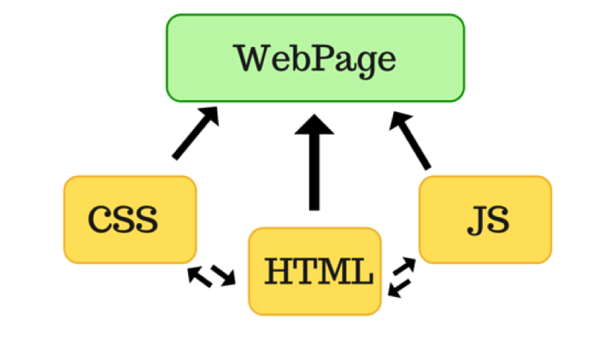

What is a Front-end developer?

This is a developer who specializes in the programming of visual user interfaces, including its aesthetics and layouts.A front-end developer code runs on a web browser, on the computer of the user of the site.
It is very high-level work, normally far removed from the hardware. It requires an understanding of human-machine interaction and design principles more than computer science theory. Much of a front-end developer’s life is spent dealing with cross-browser compatibility issues and tweaking details of the visual presentation of a UI.
The programming languages needed:
- HTML
- CSS
- Javascript
- bootstrap